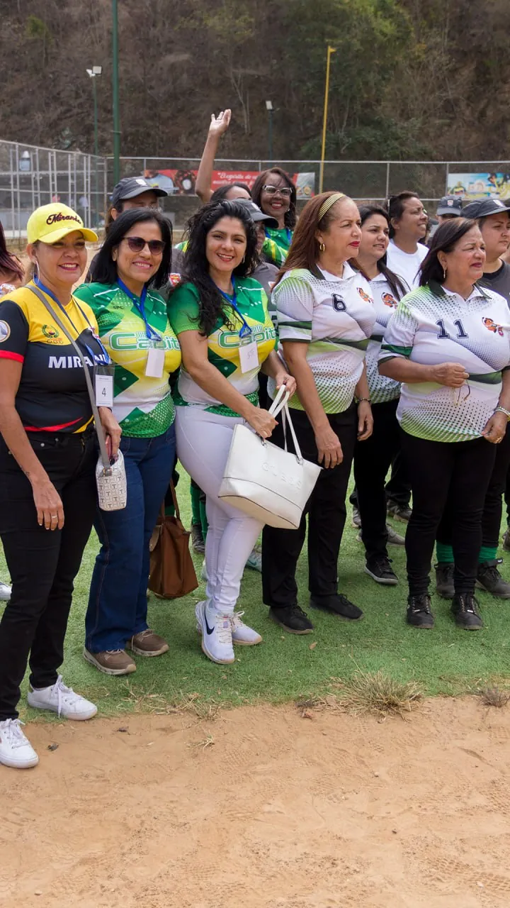

Colegios profesionales
Afiliación institucional
El colegio o gremio se da de alta, mantiene su membresía y habilita a sus miembros para completar su inscripción individual.
Colegios profesionales, gremios, clubes e instituciones se suman a la Liga para competir, formarse y cooperar.

Profesionales universitarios de estas áreas pueden afiliarse de forma individual o a través de su colegio o gremio.
El colegio o gremio se da de alta, mantiene su membresía y habilita a sus miembros para completar su inscripción individual.
Capitanes, entrenadores y delegados registran a su equipo para participar en las competencias de la Liga.

Profesionales de los 23 estados y el Distrito Capital pueden sumarse a la vida gremial deportiva.
Solicita una conversación para validar requisitos, membresía institucional, disciplinas disponibles y proceso de inscripción.